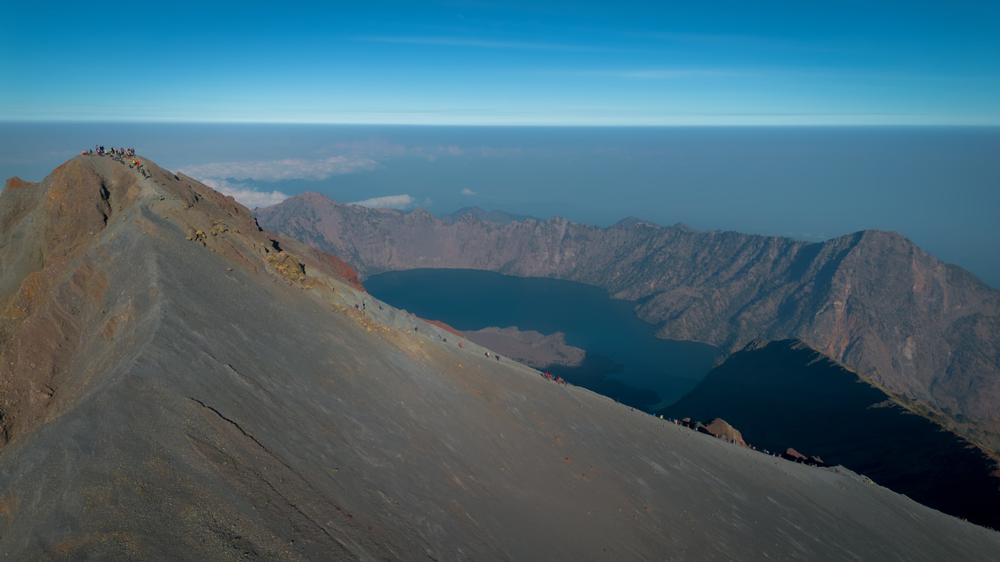
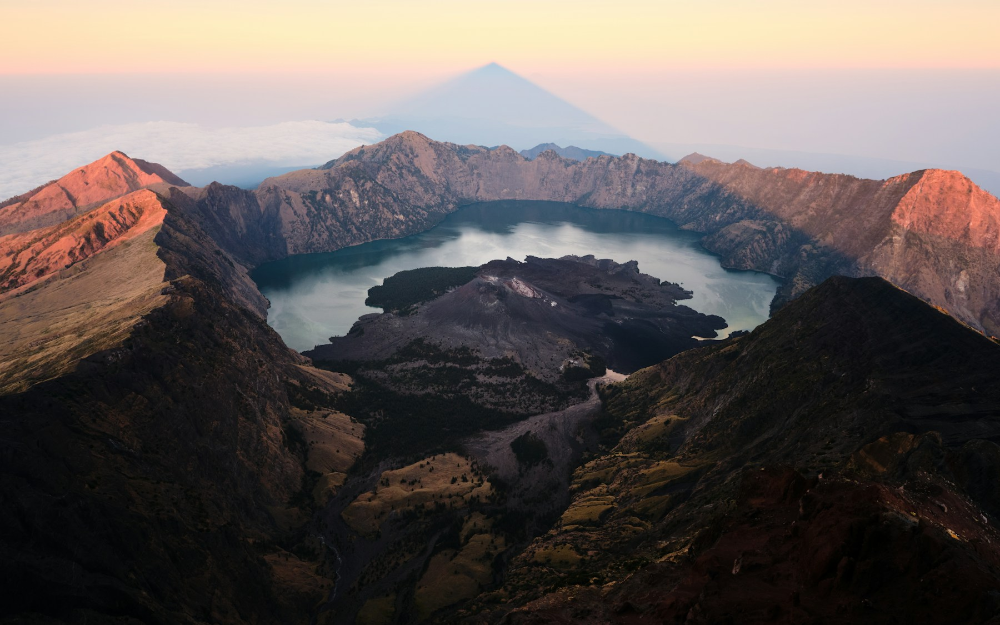
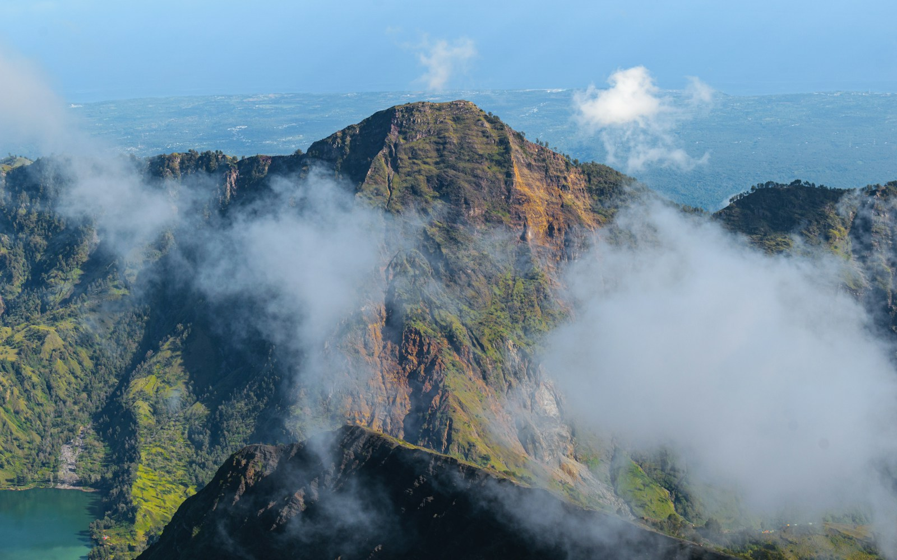

Most booked
2D1N Summit Push
Fast Sembalun route with summit attempt, porter support, meals, tent, and pre-climb briefing.
Ask via WhatsAppThe Gateway to Summit / Sembalun Lawang
A premier Rinjani trekking organizer and mountain-ready basecamp for guided climbs, misty sunrise starts, gear checks, and equipment rentals.
Folktimur keeps the mountain logistics precise: permit guidance, briefing, porter coordination, rental fitting, and a professional basecamp to gather before the Sembalun route begins.

Fast Sembalun route with summit attempt, porter support, meals, tent, and pre-climb briefing.
Ask via WhatsApp
A balanced trek for Segara Anak views, crater camp, summit morning, and a steadier descent.
Ask via WhatsApp
Shorter hike above Sembalun valley with early transport, guide, breakfast, and photo stops.
Ask via WhatsAppArrive light and gear up at Folktimur. Each item is inspected after every trek, properly fitted, and prepared for Rinjani's cold summit mornings — so you can focus on the climb.
Meet your guide, confirm route timing, and prep before the trail.
Get practical help with trek readiness and local requirements.
Layering, lamps, poles, sleeping bags, and summit essentials.
Direct coordination for the classic Rinjani starting route.
Message the Folktimur crew for trek availability, custom groups, transport timing, and gear rental pickup from Sembalun Lawang.